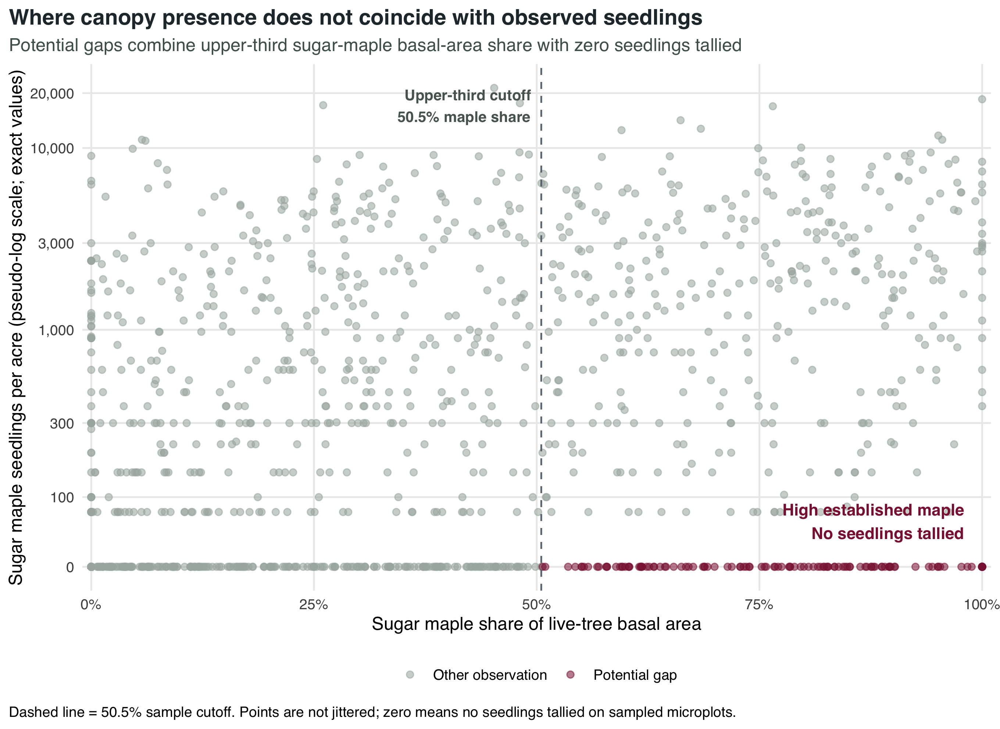
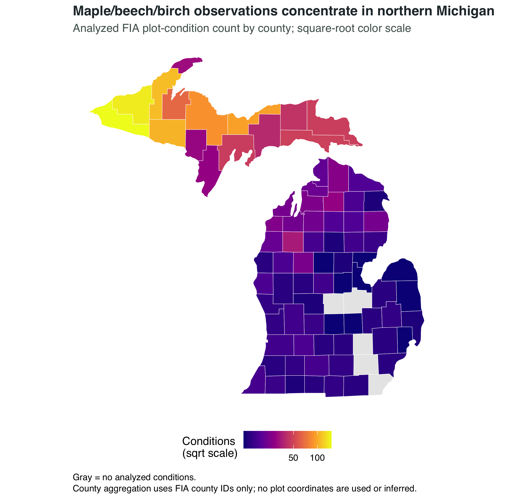
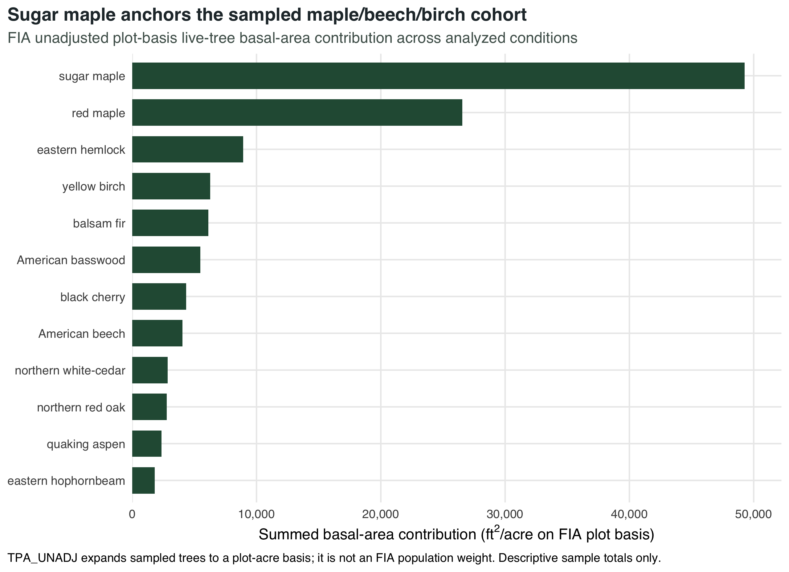
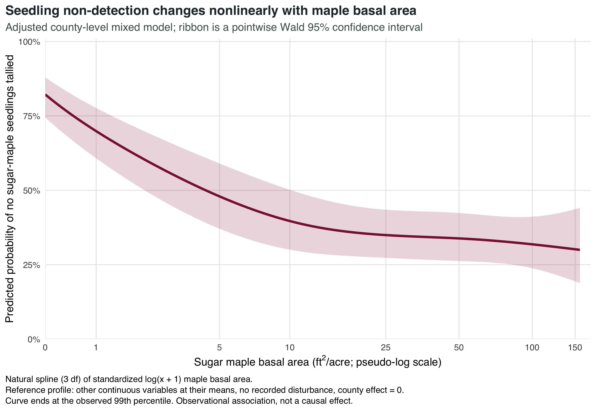
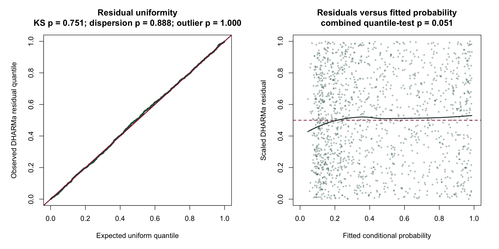
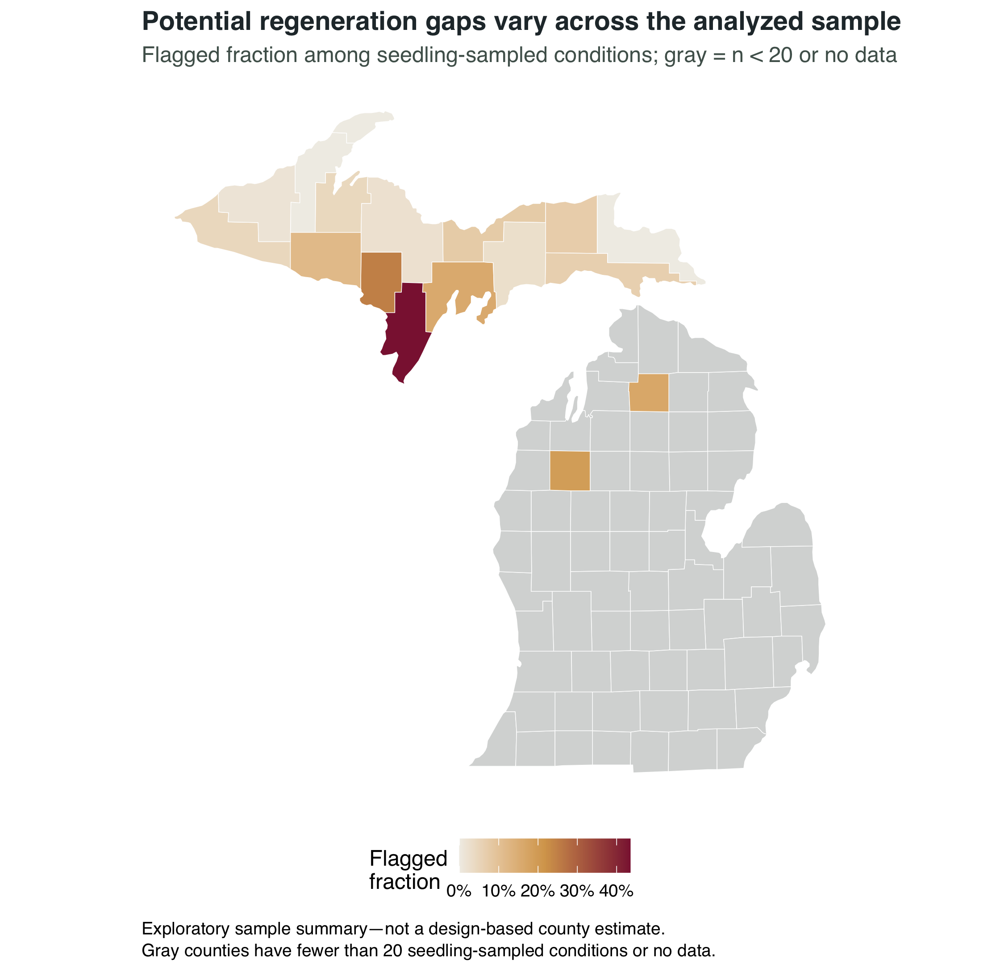
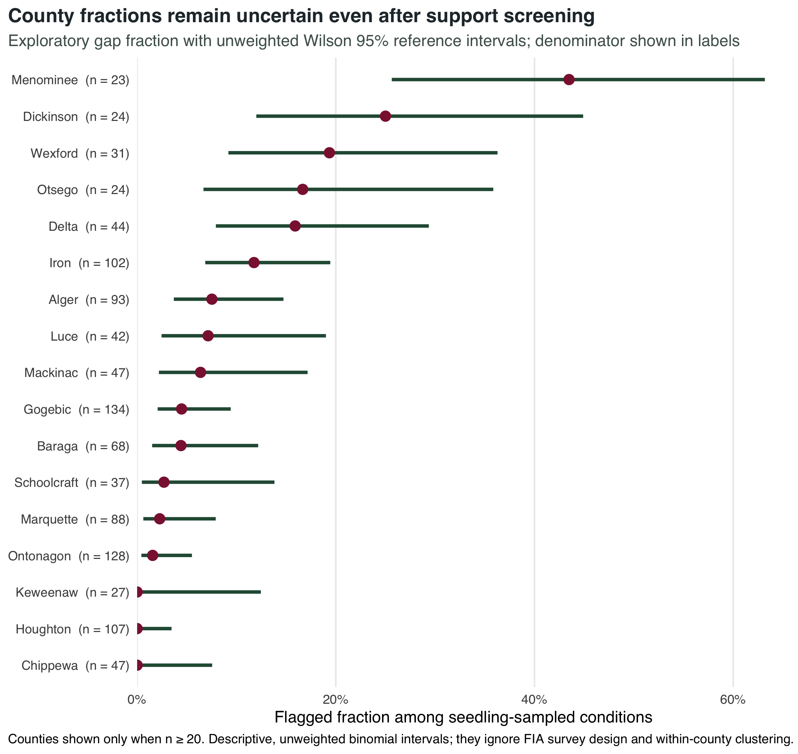

| step | observations |
|---|---|
| Plot visits assigned to current evaluation | 6459 |
| Sampled plot visits | 4134 |
| Accessible forest conditions | 5179 |
| Northern hardwood forest-type-group conditions | 1457 |
| Conditions with demonstrated microplot sampling | 1424 |
| Conditions with modeled seedling detection outcome | 1424 |
Michigan · Northern hardwoods · 2025 current evaluation · measurements 2018–2025
Canopy persistence does not guarantee a next cohort.
This study traces established sugar maple into observed regeneration, then tests which stand and broad climate characteristics accompany seedling non-detection.

The central contrast: established maple share versus the observed next cohort.
1,457
eligible plot conditions
1,424
seedling-sampled conditions
78
Michigan counties
119
potential gaps flagged
Primary adjusted pattern
Non-detection probability falls from 82% at zero established maple to 35% at 25 ft²/acre in the adjusted reference profile, then levels off. The relationship is nonlinear and observational.
Abstract
This exploratory study evaluated 1,457 plot-condition measurements from FIA’s maple/beech/birch forest-type group—used here as the operational northern-hardwood cohort—across 78 Michigan counties. It asked whether places with substantial established sugar maple also showed evidence of the next cohort. Sugar-maple seedlings were tallied in 57.2% of conditions with demonstrated microplot sampling opportunity. A transparent, sample-relative indicator flagged 119 observations (8.4%) combining upper-third sugar-maple basal-area share with no sugar-maple seedlings tallied. Associations were evaluated with mixed-effects logistic regression, and geographic generalization was checked by holding out whole counties. Results describe the analyzed sample and do not constitute FIA design-based population estimates or causal effects.
1 Why regeneration matters
Northern hardwood forests can retain a mature sugar-maple canopy even when younger cohorts are sparse. That mismatch is relevant to future composition, but it does not by itself identify a mechanism. Browsing, competition, site conditions, management history, disturbance, seed availability, and sampling variability can all contribute.
This project therefore asks a deliberately bounded question:
Among contemporary Michigan FIA northern-hardwood observations, which stand and broad-scale climate characteristics are associated with whether sugar-maple seedlings were tallied?
2 Data
2.1 Forest Inventory and Analysis
The analysis uses the Michigan SQLite release from the U.S. Forest Service FIA DataMart (U.S. Forest Service 2026). FIA reference tables—not undocumented numeric constants—identify sugar maple and the retained forest types. The analytical key is a plot visit and condition (PLT_CN + CONDID). TREE and SEEDLING records are aggregated independently before they are joined, preventing a tree-by-seedling Cartesian product.
Exact FIA plot locations are confidential. Public FIA coordinates may be approximate; this analysis neither uses nor infers them. County identifiers supplied by FIA provide the only spatial link used here.
2.2 Climate
Daymet Version 4 R1 provides daily 1-km temperature and precipitation estimates (Thornton et al. 2022). For each Michigan county, this analysis uses the Daymet cell at an interior representative location to construct a 1991–2020 climate normal. These values are broad county proxies, not plot-level measurements.
3 Study population
01
6,459
Evaluation-assigned visits
02
4,134
Sampled plot visits
03
5,179
Accessible forest conditions
04
1,457
Maple/beech/birch conditions
05
1,424
Modeled outcomes
Release v1.2.0 pins the Michigan EXPCURR evaluation “MICHIGAN 2025: 2019-2025: CURRENT AREA, CURRENT VOLUME” (EVALID 262501; inventory window 2019–2025). It then filters assigned visits to sampled, accessible conditions in FIA’s maple/beech/birch forest-type group, the project’s operational northern-hardwood cohort. The assigned measurement records span 2018–2025. Conditions without demonstrated microplot sampling opportunity do not receive an inferred seedling zero.
4 Methods
01 · Resolve
Reference-driven cohort
Species and forest types resolve from FIADB reference tables rather than hidden constants; the published release pins its documented evaluation identifier.
02 · Aggregate
Condition-level ecology
TREE and SEEDLING records aggregate independently before joining at PLT_CN + CONDID.
03 · Enrich
Protected spatial link
County identifiers connect 1991–2020 Daymet proxies without using or inferring confidential plot locations.
04 · Estimate
Cluster-aware inference
The supported logistic model carries a county random intercept, a nonlinear maple response, and transparent support and validation checks.
4.1 Established sugar maple
For every live TREE record, basal-area contribution on the FIA plot basis is calculated as
\[ BA_i = 0.005454 \times DIA_i^2 \times TPA_{i,unadj}, \]
where diameter is in inches and the resulting contribution is in square feet per acre on the unadjusted sample basis. Expansion to condition density occurs record by record using the proportion for the tree’s sampling frame: MICRPROP_UNADJ for trees below 5 inches diameter, SUBPPROP_UNADJ for larger subplot trees, and MACRPROP_UNADJ only when a populated macroplot breakpoint applies. Equivalently,
\[ BA_c = \sum_{i \in c}\frac{0.005454 \times DIA_i^2 \times TPA_{i,unadj}} {PROP_{c,frame(i),unadj}}. \]
Sugar-maple basal-area share divides the resulting frame-corrected sugar-maple density by frame-corrected total live-tree density within the condition.
As a strict calculation check, derived live-tree basal area agreed with FIA’s condition-level BALIVE field across 1,457 conditions (Pearson r = 1.000000; mean absolute error 0.000132 ft²/acre; maximum absolute error 0.000697 ft²/acre).
4.2 Regeneration
SEEDLING TPA_UNADJ values are aggregated by species and plot-condition. The primary response is binary detection. A zero means no sugar-maple seedlings were tallied on sampled microplots; it is not proof that the entire condition lacked seedlings.
4.3 Exploratory regeneration-gap indicator
The hero figure flags a potential regeneration gap when a condition has:
- sugar-maple basal-area share in the upper third among conditions with demonstrated seedling sampling; and
- no sugar-maple seedlings tallied.
The continuous companion indicator is the percentile rank of established share minus the percentile rank of log seedling density. Neither measure is presented as a validated ecological index.
4.4 Model
The supported model is a mixed-effects logistic regression with no-sugar-maple-seedlings-tallied as the response. Sugar-maple basal area enters as a 3-df natural spline of standardized log1p basal area; the spline improved AIC by 10.7 and the nested likelihood-ratio test gave p = 0.00063. Other continuous predictors are standardized within the final model-complete cohort, and their conventional coefficient summaries use model-based Wald 95% intervals. Retained fixed effects were nonlinear sugar-maple basal area, Non-maple basal area, Microplot condition coverage, Stand age, Recorded disturbance, Mean annual temperature, Annual precipitation, Measurement year.
The fitted random-effects structure is a county random intercept. Adding a plot-visit intercept produced a small variance (0.0099), no support in a boundary-aware variance-component comparison (p = 0.485), and an AIC 2.0 points higher, so the parsimonious county-only structure was retained. The model uses 1,424 complete conditions—97.7% of the 1,457-condition analytical cohort—from 1,341 plot visits across 78 counties. There were 60.9 outcome events per non-intercept fixed-effect coefficient.
| Item | Value |
|---|---|
| Formula | outcome_no_seedlings ~ splines::ns(z_maple_ba, df = 3) + z_nonmaple_ba + z_microplot_coverage + z_stand_age + disturbed + z_mean_temp + z_precip + z_year + (1 | geoid) |
| Response events | 609 |
| Response non-events | 815 |
| Model-complete cohort | 1,424 / 1,457 (97.7%) |
| Counties | 78 |
| Plot visits | 1,341 |
| Multi-condition plot visits | 83 |
| Events per fixed coefficient | 60.9 |
5 Results
Screened mismatch
8.4%
of sampled conditions combined upper-third maple share with no seedlings tallied.
Established maple
82% → 35%
adjusted non-detection probability from 0 to 25 ft²/acre maple basal area.
Sampling opportunity
0.64
adjusted odds ratio as microplot condition coverage increases by one SD.
Mapping support
17
counties met the configured minimum of 20 seedling-sampled conditions.
5.1 Study context


5.2 Canopy–cohort mismatch
5.3 Model associations

| Predictor | Odds ratio | 95% CI | p-value |
|---|---|---|---|
| Non-maple basal area | 1.25 | 1.07–1.46 | 0.006 |
| Microplot condition coverage | 0.64 | 0.55–0.74 | <0.001 |
| Stand age | 0.98 | 0.84–1.15 | 0.807 |
| Recorded disturbance | 1.24 | 0.90–1.71 | 0.198 |
| Mean annual temperature | 1.85 | 1.44–2.38 | <0.001 |
| Annual precipitation | 0.77 | 0.60–0.99 | 0.041 |
| Measurement year | 0.93 | 0.81–1.06 | 0.296 |
Reading the model
The established-maple association was nonlinear. At the report’s reference profile—other continuous predictors at their model-cohort means, no recorded disturbance, and the county random effect set to zero—the adjusted probability of no seedlings tallied declined from 82% at zero maple basal area to 35% at 25 ft²/acre, then leveled off. These are conditional profile contrasts from an observational model, not causal probabilities for every forest condition. Greater microplot condition coverage was also associated with lower non-detection odds (OR 0.64, Wald 95% CI 0.55–0.74), reinforcing why sampling opportunity belongs in the model.
The retained county-scale climate terms described a broad geographic gradient. The temperature proxy had OR 1.85, 95% CI 1.44–2.38. The precipitation proxy had OR 0.77, 95% CI 0.60–0.99, but its Wald p-value was 0.041, BH-adjusted p-value was 0.071, and the county-cluster sensitivity p-value was 0.188; it is therefore treated as weak and exploratory. These coefficients must not be read as plot-level climate effects. The 95% confidence intervals crossed one for stand age and recorded disturbance.
5.4 Model adequacy
Converged
optimizer criterion
Non-singular
random-effects structure
0.179
county-held-out Brier score
0.793
county-held-out ROC AUC
Ten-fold cross-validation assigned entire counties—not individual records—to folds. Scaling and spline transformations were learned again inside each training fold, and held-out counties were predicted from fixed effects only. Across all 1,424 assessment predictions, Brier score was 0.179, ROC AUC was 0.793, calibration intercept was -0.193, and calibration slope was 0.901. For comparison, the conditional in-sample Brier score was 0.154; it is not presented as out-of-county performance.

No simulation-based check crossed the pre-specified 0.05 flag: uniformity p = 0.751, dispersion p = 0.888, and outlier p = 1.000. The combined residual-quantile check was borderline (p = 0.051), so absence of a formal flag is not treated as proof of perfect model fit.
5.5 Broad geographic pattern


Only 17 counties met the configured mapping support threshold of at least 20 seedling-sampled conditions. Gray counties are deliberately suppressed rather than assigned unstable fractions. The interval panel shows unweighted binomial reference uncertainty only; it ignores the FIA survey design and within-county clustering.
6 Discussion
What the evidence supports
- A transparent screen for canopy–cohort mismatch in the analyzed sample.
- Adjusted associations with seedling non-detection under the supported model.
- Reproducible hypotheses for field or design-based follow-up.
What it does not establish
- Statewide prevalence or formal FIA population estimates.
- A causal effect of canopy, climate, browsing, or disturbance.
- Exact plot-level climate exposure or long-term cohort survival.
The analysis makes the distinction between established live-tree basal area and observed seedling recruitment visible. Under the primary rule, 119 of 1424 sampled conditions were flagged. Raising the established-maple threshold from an upper-third share of 50.5% to an upper-quartile share of 62.3% reduced the flag count to 93 (6.5%). This sensitivity is a reason to treat the flag as a screening device rather than a fixed ecological category.
The model estimates which measured stand and broad climate attributes covary with seedling detection after adjustment for the other retained terms. The maple curve and pointwise Wald intervals are the primary association evidence; county-grouped validation separately assesses discrimination and calibration outside the fitted counties.
The results should be interpreted as hypotheses and patterns worthy of follow-up. A seedling tally is an imperfect window into recruitment, and seedlings do not guarantee survival into sapling or canopy cohorts.
7 Limitations
- Confidential locations. Exact FIA plot locations are confidential. Public coordinates may be approximate; the analysis neither uses nor infers them, relying on county IDs alone.
- Sampling opportunity. A zero means no seedlings were tallied on sampled microplots, not ecological absence across the condition.
- Observational design. Associations are not causal effects.
- Sample versus population.
TPA_UNADJand frame proportions expand records within the plot design; they are not statewide survey weights. Formal statewide estimates require FIA evaluation, stratum, adjustment, and sampling-error procedures (Bechtold and Patterson 2005). - Exploratory indicator. The gap flag is sample-relative and threshold-dependent.
- County summaries. Wilson intervals are unweighted descriptive references that ignore survey design and within-county clustering.
- Unmeasured drivers. Deer browsing, soils, management history, competition, and other factors are incompletely represented.
- Temporal alignment. Climate normals summarize 1991–2020 and do not reproduce weather immediately preceding each measurement.
8 Reproducibility
85
hashed source artifacts
83
county Daymet responses
72
full-build expectations passed
renv
locked R environment
Raw data are excluded from version control. Source URLs, cached-file retrieval timestamps, file sizes, and checksums—including each county’s Daymet API response—are recorded in outputs/audits/data-provenance.csv. Important joins record row counts, unique keys, and unmatched keys. The public repository includes a curated release validation record and aggregate model-support evidence.
GitHub Actions runs the data-free unit-test subset; tests requiring derived FIA data or a fitted model skip cleanly on a fresh clone. The completed v1.2.0 local build and its exact expectation counts are recorded in the release-validation artifact. From a fresh clone, the full analysis runs with:
make setup
make acquire
make allPackage versions are recorded in renv.lock. The release was tested with R 4.6.1 and Quarto 1.9.38. FIA’s state archive URL is mutable, so acquisition compares downloaded source sizes and SHA-256 hashes with the v1.0.0–v1.2.0 manifest and warns when a current-data rerun is not byte-identical to the published source snapshot.
References
Bechtold, William A., and Paul L. Patterson, eds. 2005. The Enhanced Forest Inventory and Analysis Program: National Sampling Design and Estimation Procedures. GTR-SRS-80. U.S. Department of Agriculture, Forest Service. https://doi.org/10.2737/SRS-GTR-80.
Thornton, M. M., R. Shrestha, Y. Wei, P. E. Thornton, S.-C. Kao, and B. E. Wilson. 2022. “Daymet: Daily Surface Weather Data on a 1-Km Grid for North America, Version 4 R1.” ORNL Distributed Active Archive Center. https://doi.org/10.3334/ORNLDAAC/2129.
U.S. Forest Service. 2026. FIA DataMart. https://research.fs.usda.gov/products/dataandtools/fia-datamart.